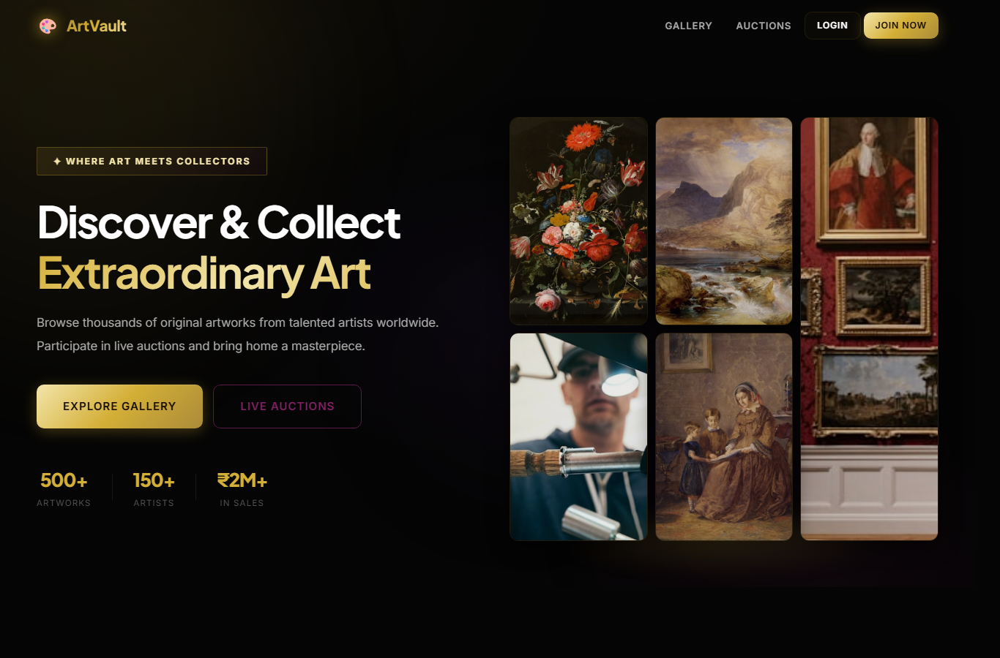
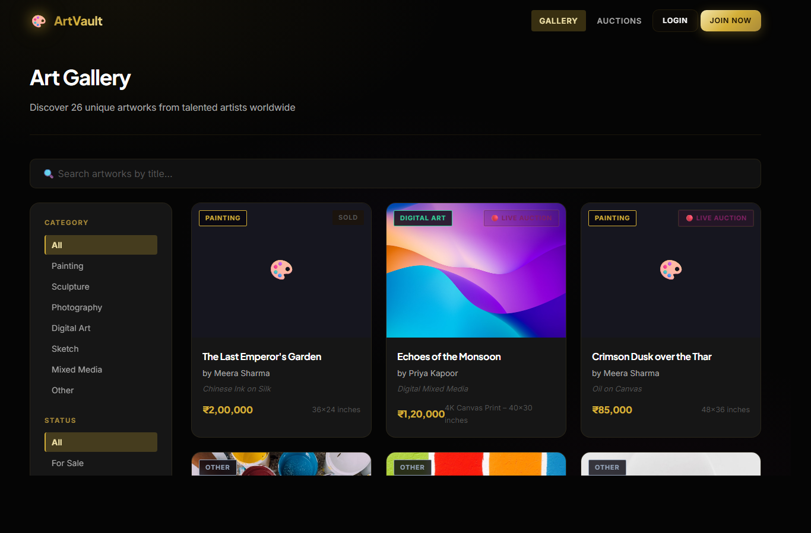
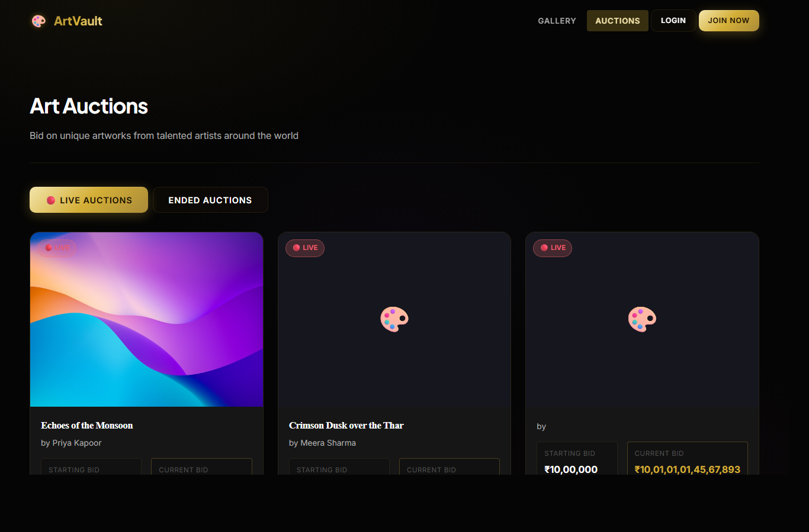
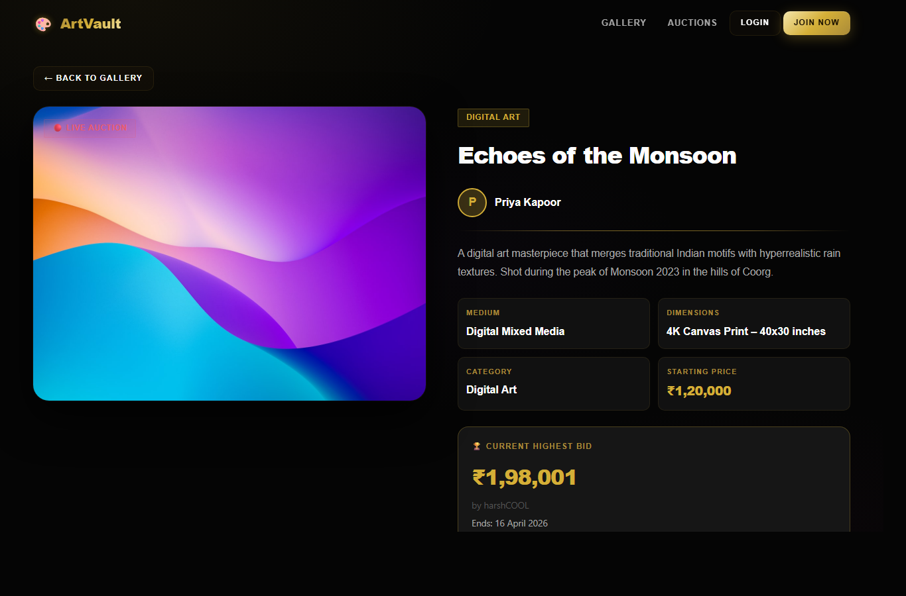
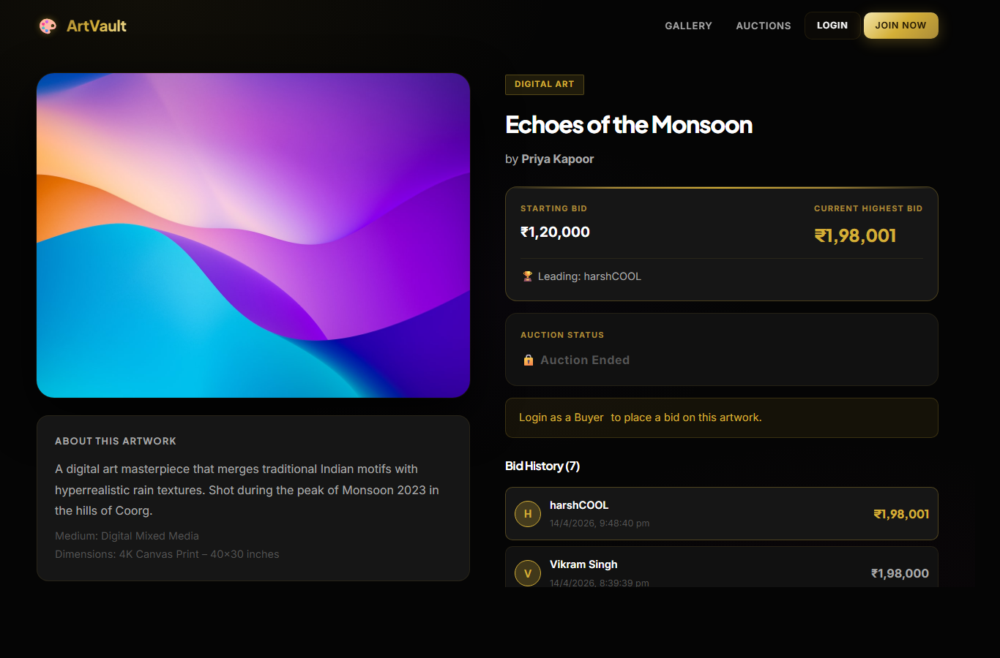
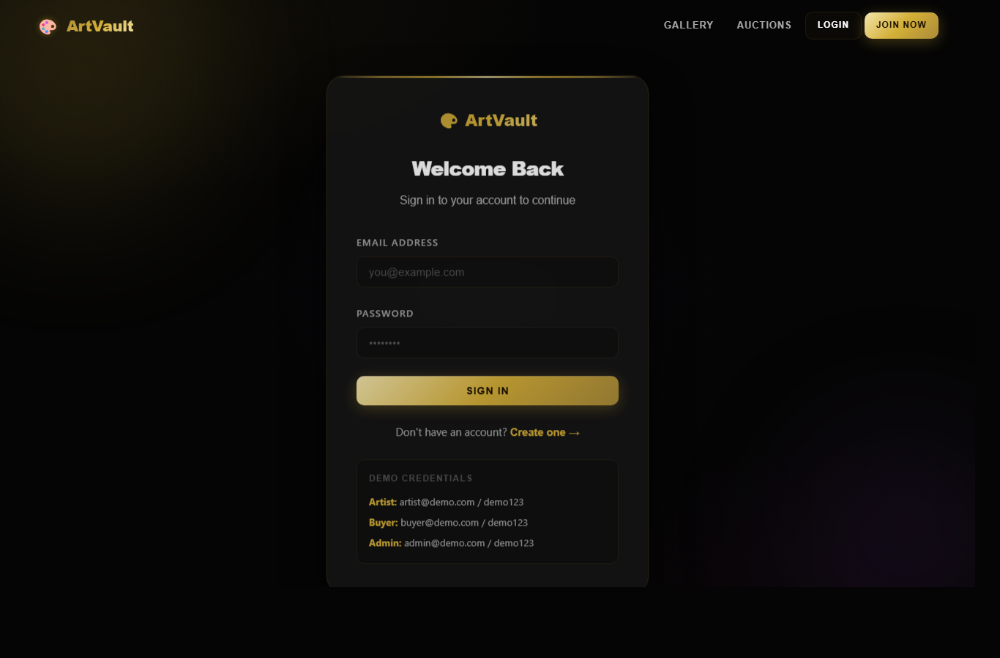
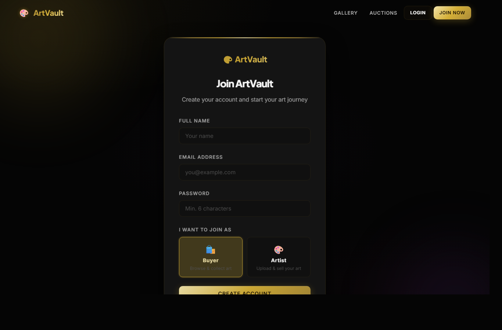
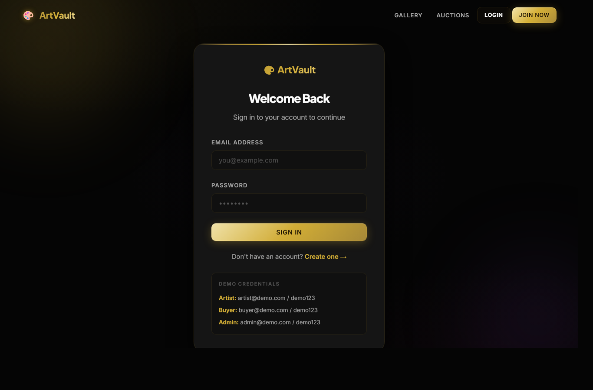

Submitted in partial fulfillment of the requirements for the award of degree/course completion
This is to certify that the project report entitled "ArtVault - Online Art Gallery & Auction Platform" has been prepared and submitted by [Student Name] in partial fulfillment of the requirements of the academic project work. The project has been developed using the MERN stack and demonstrates a complete web-based platform for artwork discovery, artist uploads, real-time auctions, bidding, mock payments, notifications, and administrative management.
The work presented in this report is based on the project files, database models, frontend pages, backend APIs, and implementation available in the ArtVault source code.
Signature of Guide
[Guide / Faculty Name]
I hereby declare that this project report titled "ArtVault - Online Art Gallery & Auction Platform" is prepared from the implemented project work. The contents describe the design, development, modules, technologies, database structure, testing, and screenshots of the application. The report has been prepared for academic submission and all project-specific information has been adapted from the actual ArtVault project.
Date: ____________
Place: ____________
Signature: ____________
I express my sincere gratitude to my guide, teachers, and institution for providing the opportunity and support to complete this project. Their guidance helped in understanding the software development process, full-stack architecture, frontend-backend integration, database design, and testing methodology.
I also thank everyone who provided feedback during the development of ArtVault. The project helped strengthen practical knowledge of React, Node.js, Express, MongoDB, REST APIs, authentication, role-based authorization, file upload handling, and real-time communication using Socket.IO.
ArtVault is an Online Art Gallery & Auction Platform designed to connect artists, buyers, and administrators through a single digital marketplace. The platform allows artists to upload artwork, manage artwork details, create auctions, and track auction status. Buyers can browse artwork, participate in live auctions, place bids, manage orders, and view payment receipts. Administrators can monitor users, artworks, auctions, and platform statistics.
The project is developed using the MERN stack. The frontend uses React with Vite, Redux Toolkit, React Router, Axios, and Socket.IO client. The backend uses Node.js, Express, MongoDB with Mongoose, JWT-based authentication, Multer for artwork uploads, and Socket.IO for real-time auction updates. The system includes role-based access control for Artist, Buyer, and Admin roles.
The application demonstrates core concepts of modern full-stack development including REST API design, secure authentication, protected routes, reusable components, responsive UI design, database modeling, live bid updates, and structured dashboard workflows.
The art market increasingly depends on digital platforms for visibility, sales, and audience engagement. Traditional galleries are limited by location, operating hours, and manual coordination between artists and buyers. ArtVault provides a digital solution where original artworks can be listed, discovered, auctioned, and purchased through an integrated web application.
The platform supports artwork browsing, category and price-based filtering, detailed artwork pages, live auctions, bid tracking, mock payment flow, notifications, and separate dashboards for artists, buyers, and administrators. It is designed as a full-stack MERN application with a responsive dark art-gallery aesthetic.
ArtVault - Online Art Gallery & Auction Platform
Artists need a simple way to display and sell their work online, while buyers need a trusted system to discover artwork and participate in transparent auctions. Manual auction handling can be slow, error-prone, and difficult to monitor. ArtVault solves this by providing a centralized platform with role-based workflows and real-time bid updates.
In many traditional art sale workflows, artists display work through physical galleries, direct contacts, or static catalogues. Auction updates may be handled manually and buyers may not receive instant bid status information. Such systems can limit reach, reduce transparency, and require more coordination.
The proposed system is a web-based MERN application that digitizes artwork listing, auction participation, payment simulation, and user management. It provides a structured interface for three user roles: Artist, Buyer, and Admin. Artists upload and auction artwork, buyers browse and bid, and admins monitor the platform.
ArtVault follows a client-server architecture. The React frontend communicates with the Express backend through REST APIs. MongoDB stores persistent records, while Socket.IO enables live auction bid events. Authentication uses JWT tokens stored on the client and sent through authorization headers for protected requests.
The authentication module includes registration, login, current user retrieval, and profile update features. Passwords are hashed with bcryptjs, and JWT is used to authenticate protected requests. Role-based protected routes separate Artist, Buyer, and Admin workflows.
The gallery module displays artworks with filters for category, status, sort order, search text, and price range. Each artwork card links to a detailed page showing title, artist, category, description, price, status, and auction information when applicable.
Artists can upload artwork with title, description, category, medium, dimensions, base price, tags, and artwork image. The backend uses Multer to handle file upload and stores artwork metadata in MongoDB.
Artists can create auctions for available artworks. Buyers can view active auctions, inspect details, track countdown timers, view current highest bids, and place bids. Socket.IO updates auction pages when new bids are placed.
The order module supports mock payment after a buyer wins or purchases artwork. Paid orders include transaction information and receipt display. This module is designed so a real payment provider can be integrated later.
Notifications inform users about bids, auction wins, payment events, and other general updates. Users can mark notifications as read or mark all notifications as read.
The admin dashboard provides platform statistics and management views for users, artworks, and auctions. Admin users can monitor the system and toggle or delete user accounts where required.
The frontend is organized into pages, components, Redux slices, and API services. React Router manages navigation. Redux Toolkit stores authentication, artworks, auctions, bids, orders, and notifications. Axios centralizes API calls and attaches JWT tokens to protected requests.
The backend is structured into routes, controllers, middleware, models, config, and utilities. Express handles API routing. Mongoose manages database schemas. Auth middleware protects routes by verifying JWT tokens. Role middleware restricts access to Artist, Buyer, and Admin operations.
The following screenshots were captured from the running local ArtVault application at http://localhost:5173.








Testing was performed by validating user flows, protected route behavior, API responses, data display, and frontend build quality. Public pages were checked in the browser and backend health was verified through the health API.
ArtVault successfully demonstrates a full-stack online art gallery and auction platform. The project combines a responsive React frontend, Express backend, MongoDB database, JWT authentication, role-based access, real-time auction updates, mock payment flow, and dashboards for different users. It provides a practical solution for artists and buyers and can be extended into a production-ready marketplace with payment, verification, and deployment enhancements.